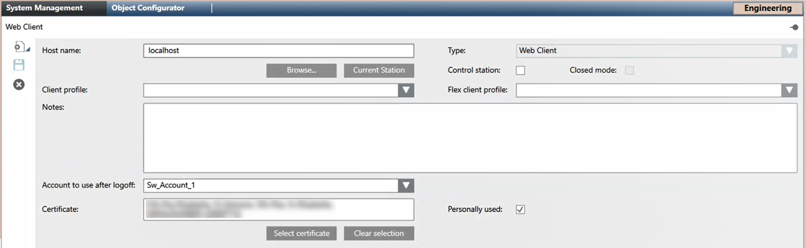

Configure the Identified Flex Station in System Manager
In System Manager, you need to create a station object to represent the identified Flex station. Then you can apply other settings, such as client profiles or scope/event/application right, to this station.
Prerequisites
- System Manager is in Engineering mode.
- System Browser is in Management View.
Specify Host Name and Host Certificate on Identified Flex Station Object
In System Manager you must configure a station object of type Web Client, specifying the host name and host certificate of the identified Flex client station.
- In System Browser, select Project > Management System > Clients.
- In the Object Configurator tab click New
 and select New Station.
and select New Station. - In the New Object dialog box, enter a name and description and click OK.
- The new station object is added to System Browser.
- Select the System Management tab.

- In the Host name field specify the computer host name of the identified Flex station.
NOTE: Host name without a domain suffix is needed. - From the Type drop-down list, select Web Client.
- Click Select Certificate.
- In the dialog box, locate and select the host certificate for the identified Flex client that you previously imported into the server station. Select the host certificate from the Certificates (Local Machine) > Personal Certificates store.
NOTE: To allow OIDC authentication, you must create a new local OpenID user for Flex Client, and then select a certificate for an OpenID user. - Click Save
 .
.
- In the Extended Operation tab, the Operational Status property indicates
Enabled.
This means that logging onto the Flex Client application from the identified station is allowed.
Configure Client Profile and Other Settings for the Identified Flex Station
In the System Management tab, you can optionally configure other aspects of the behavior of the identified Flex station.
- In System Browser select Project > Management System > Clients > [identified flex station].
- Select the System Management tab.
- Specify one or more of the following settings:
- Flex client profile: For details, see Set the Client Profile for a Flex Station.
- Control station: For details, see Enabling Control Station in Danger Management.
- Personally used: For details, see Setting the Personal Use of Flex Client.
- Click Save .
Define Scope, Event and Application Rights for the Identified Flex Station
For security purposes, the scope, application and event rights should be limited to only what is appropriate for a web-based station.
NOTE: Scope, event and application rights can also be defined for user groups. A user can access those capabilities that are enabled in both the relevant user group AND management station group. For example, if a user with full scope rights logs on to an identified Flex station for which scope rights have been restricted, the restricted scope rights will apply.
- In System Browser select Project > System Settings > Security.
- Select the Security tab.
- If one does not already exist, create a Management station type group named, for example, Identified Flex Clients and add the current [identified flex station] to that group.
- Define the required Scope rights, Event rights, and Application rights for the station group.
These will apply to all stations that are members of this group. - If not already done, specify the project settings to work with Flex Client reports as follows:
- In SMC, define the directory access. For instructions, see Configure the Web Service Settings.
- In Desigo CC, create at least one report definition. For instructions, see Create a New Report Definition.
Configure Event Settings in UL/ULC Flex Client
In UL/ULC profiles, for correct behavior of the Event List, it is necessary to set the Event List to open automatically when a new event occurs.
- In System Browser, select Project > System Settings > Clients Setting > Event Settings > Flex Client.
- Select the Event Settings tab and expand General Settings.
- In On new event, select Open Event List.
- Click Save .
For a more complete view of the configuration of event rights, see Event Settings Workspace.